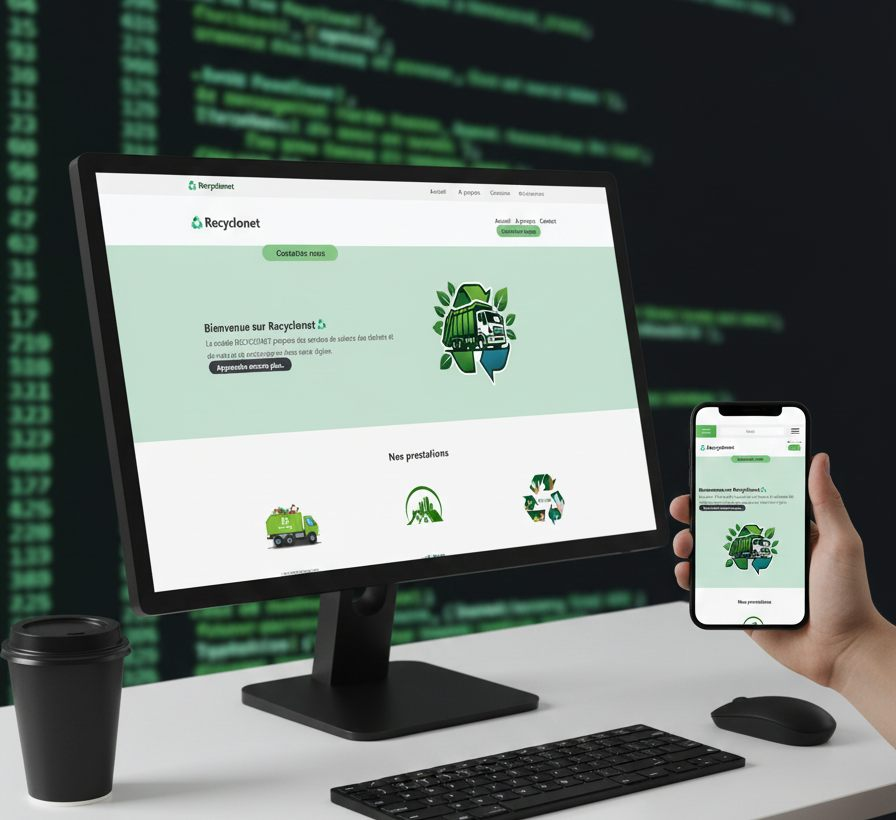
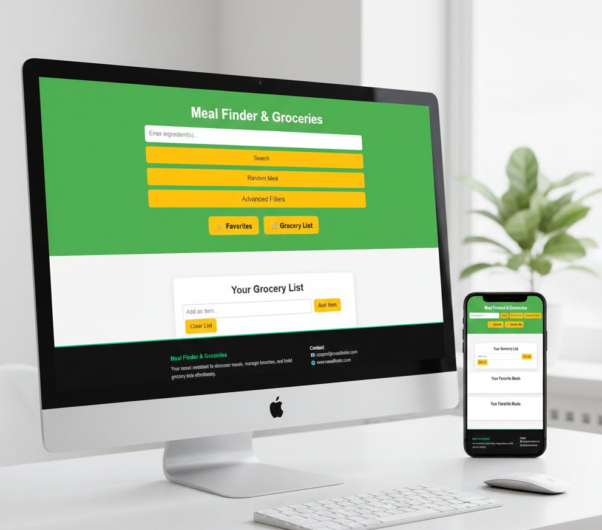

Chaque projet cherche d'abord à rendre l'offre plus lisible et plus rassurante.
Portfolio
Des projets qui rendent une marque plus crédible.
Cette sélection montre notre direction: des interfaces plus lisibles, des expériences plus propres et une présentation plus sérieuse.
Sélection
3 projets visibles
D'autres réalisations peuvent être présentées sur demande selon la confidentialité des clients.
Sites, interfaces et parcours réels, pensés pour inspirer confiance et faire agir.
Le but n'est pas juste d'être joli, mais d'aider la marque à mieux paraître et mieux vendre.
Filtres
Voir rapidement le type de projet qui vous intéresse.
Chaque fiche résume le contexte, l'intervention WebFy et le type de résultat recherché pour le client.

Site web
Innonutech
Présentation de produits électroniques dans une interface plus claire et plus rassurante.
Contexte
Mettre en valeur une offre tech sans surcharger la lecture ni perdre le visiteur.
Intervention
Hiérarchie produit, sections plus nettes et navigation pensée pour mieux guider.

Site web
Recyclonet
Projet orienté service avec une présentation plus simple du parcours de prise de rendez-vous.
Contexte
Rendre une offre de service plus accessible et plus évidente pour le prospect.
Intervention
Flux plus pratique, message plus direct et meilleure lisibilité des actions à faire.

Application web
Meal Finder and Groceries
Exploration produit et usage interactif dans une expérience plus dynamique côté utilisateur.
Contexte
Montrer une logique applicative plus vivante, plus interactive et orientée usage.
Intervention
Recherche, données dynamiques et parcours plus expérimental pour l'utilisateur final.
Ce que montrent ces projets
Plus qu'un style, une méthode de travail.
- Clarifier une offre pour mieux convaincre
- Renforcer la crédibilité visuelle d'une marque
- Réduire la friction dans les parcours importants
- Montrer une structure plus sérieuse dès les premières secondes
Livrables typiques
Ce qu'un client reçoit réellement.
- Pages plus lisibles et mieux hiérarchisées
- Direction visuelle cohérente et exploitable
- CTA, parcours et sections orientés conversion
- Base technique propre pour évoluer ensuite
Preuves
Le type de retour que ce niveau de travail cherche à créer.
Ces témoignages reflètent le résultat attendu: plus de clarté, plus de confiance et une image plus professionnelle.
"Nous avions surtout besoin d'une image plus nette. Le travail a aidé à rendre l'offre beaucoup plus compréhensible."
Responsable de structure locale Projet vitrine & repositionnement"La différence la plus visible n'était pas seulement le design, mais la façon dont le parcours guidait mieux le visiteur."
Client orienté service Refonte de présentation"On sent davantage une logique produit et une vraie organisation derrière les écrans."
Projet applicatif Interface & expérience utilisateur
Confidentialité
Tous les projets ne sont pas publics, et c'est normal.
Certains clients choisissent de garder leurs réalisations privées. Nous montrons donc une sélection utile, sans surcharger la page avec des éléments faibles ou incomplets.
Votre projet
Vous voulez une présence digitale du même niveau?
Parlons de votre besoin et construisons une version plus professionnelle de votre marque.